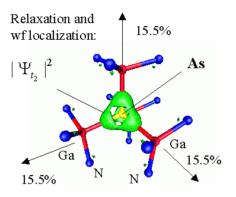
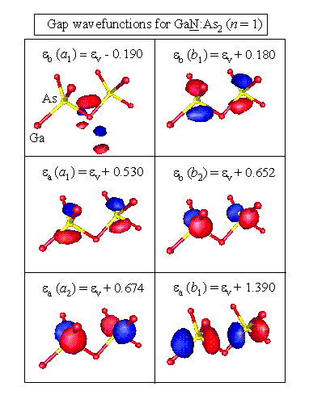

Conventional (e.g. InxGa1-xN) isovalent substitution in III-V semiconductor compounds does not lead to appearance of deep electronic levels inside the band gap. However, P and As substituted for N in GaN induce deep triply degenerate levels well above the valence band maximum. The impurity-surrounding Ga atoms relax outwards and the defect level wavefunction is strongly localized, as shown in Figure 1.

Figure 1. Atomic relaxation (percent) and deep level electronic wavefunction for As-impurity in GaN.
An impurity pair is formed, when two P or As impurities occupy nearby N sites. As a result of the interaction of the electronic levels and elastic strain fields, the deep defect levels experience a large splitting. The resulting wavefunctions for the nearest-neighbor As-As pair are illustrated in Figure 2.

Figure 2. Gap wavefunctions for As-As impurity pair in GaN.
These results were derived using the state-of-the-art computational tools, utilizing ab initio total energy calculations and empirical plane-wave pseudopotential method.
L. Bellaiche, S.H. Wei and A. Zunger, "Localization and Percolation in Semiconductor Alloys: GaAsN vs. GaAsP," Phys. Rev. B. 54, 17568-17576 (1996).
L. Bellaiche, S.H. Wei and Alex Zunger, "Composition-dependence of I nterband Transition Intensities in Isoalent Semiconductor Alloys: GaPN vs GaPAs," Phys. Rev. B. 56, 10233-10240 (1997).
L. Bellaiche, S. H. Wei and A. Zunger, "Band gaps of GaPN and GaAsN Alloys," Appl. Phys. Lett. 70, 3558-3560 (1997).
L. Bellaiche, S.H. Wei and A. Zunger, "Bond Length Distribution in Tetrahedral vs. Octahedral Semiconductor Alloys: the Case of GaInN," Phys. Rev. B. 56, 13872-13877 (1997).
L. Bellaiche and A. Zunger, "Effect of atomic short range order on the electronic and optical properties of GaAsN, GaInN and GaInAs alloys," Phys. Rev. B. 57, 4425 (1998).
T. Mattila and A. Zunger, "Deep electronic gap levels induced by isovalent P and As impurities in GaN," Phys. Rev. B. 58, 1367 (1998).
T. Mattila and A. Zunger, "P-P and As-As isovalent impurity pairs in GaN," Phys. Rev. B. 59, 9943-9953 (1999).
T. Mattila and A. Zunger, "Predicted bond length variation in Wurtzite and Zinc-blende InGaN and AlGaN Alloys," J. Appl. Phys. 85, 160-167 (1999).
T. Mattila, S.H. Wei and A. Zunger, "Electronic structure of sequence mutations in ordered GaInP2," Physical Review Letters 83, 2010-2013 (1999).
T. Mattila, S.H. Wei and A. Zunger, "Localization and anticrossing of electron levels in GaAsN alloys," Phys. Rev. B. Rapid Communication, Oct. 15, (1999).
For a listing of all SST references on the topic "Nitrides and the Zincblende/Wurtzite System", click on the "Get References" button below.
Back to SST
Home Page